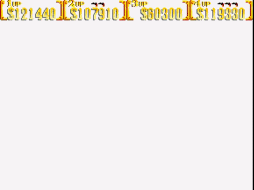

O fim
Vocês utilizam o espaço aberto dos jardins para poder se movimentar e coordenar seus ataques.
Em meio a uma batalha que dura horas de tiros vocês conseguem finalmente atingir o magnata, Sir Richard Rose, que cai. Sem frases impactantes, sem mais motivos. Vocês podem ver a rosa viva, que este um dia carregou no bolso de seu paletó, agora manchada, cair ao chão e despedaçar-se.
